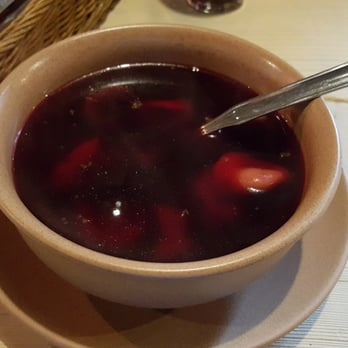

Wprowadzenie
Nie ma nic lepszego niż talerz gorącej, pysznej zupy. Zupę często się jada w formie pierwszego dania obiadu, lecz to nie przeszkadza by ją zjeść zaserwować na kolację. Duża różnorodność zup daję spory wybór. W tym rakingu postanowiłem wymnienić 7 moich ulubionych.Zupa szczawiowa
Ranking otwiera zupa szczawiowa, często przygotowywana latem i podawana z jajkiem oraz śmietaną. Mimo umieszczenia jej na ostatnim miejscu, jest to zupa, którą warto spróbowaćKapuśniak
Jedno z najpopularniejszych dań z kapustą, podawana z gotowanymi ziemniakami. Dzięki swojemu głównemu składnikowi ma wiele witaminę C i zmacnia odporność.Barszcz czerwony
Podawany z uszkami, barszcz czerwony jest częstym gościem wigilinego stołu. Również znaną zupą jest barszcz ukraiński, który się jada z różnymi warzywami.Zupa ogórkowa
Robiona jest na rosole, z dodatkiem startych kiszonych ogórków. Należy do zup kwaśnych. Można ją podawać z ziemniakami albo grzankami.Reklama
Odwiedz zjedz jedne z najlepszy barszcz czerwony w Warszawie, tylko w Siwym Dymie: Ulica Puławska 378
Żurek / Barszcz biały
Na trzecim miejscu jest żurek, często jadany na Wielkanoc. Jest wiele dodatków, z którymi podaje się żurek:- kiełbasa
- ziemniaki
- gotowane jajko
Zupa pomidorowa
To wyjątkowo popularne i klasyczne danie obiadowe zdobywa srebny medal w naszym rankingu. Smaczne niezależnie czy z makaronem, czy z ryżem. Wyborna z dodatkiem śmietany.Rosół
Złoty medal zdobywa zupa, której nie trzeba nikomu przedstawiać, Rosół, czyli wywar gotowany z różnych rodzajów mięs i warzyw. Jeśli sam chcesz przygotować najlepszą z zup, obejrzyj ten poradnik:Kliknij tu by przejść na stronęKaloryczność
Kaloryczność zupy zależy od przede wszystkim od składników, ale także od dodatków na przykład śmietany, mięsa, ziemniaków. Zazwyczaj porcja to 250 do 300ml. Poniżej tabela z kalorycznością jednej porcji zupy:| Zupa | Kaloryczność |
|---|---|
| Zupa szczawiowa (z jajkiem i ziemniakami) | 250kcal |
| Kapuśniak (z ziemniakami) | 48kcal |
| Barszcz czerwony (czysty) | 30-40kcal |
| Barszcz czerwony (z łuszkami) | 230kcal |
| Barszcz ukraiński | 200-300kcal |
| Zupa ogórkowa | 60-80kcal |
| Żurek(z kiełbasą i jajkiem) | 200-250kcal |
| Zupa pomidorowa (z ryżem) | 142kcal |
| Zupa pomidorowa (ze śmietaną i makaronem) | 200kcal |
| Rosół (czysty) | 80-100kcal |
| Rosół (z makaronem) | 150-200kcal |